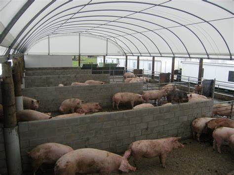
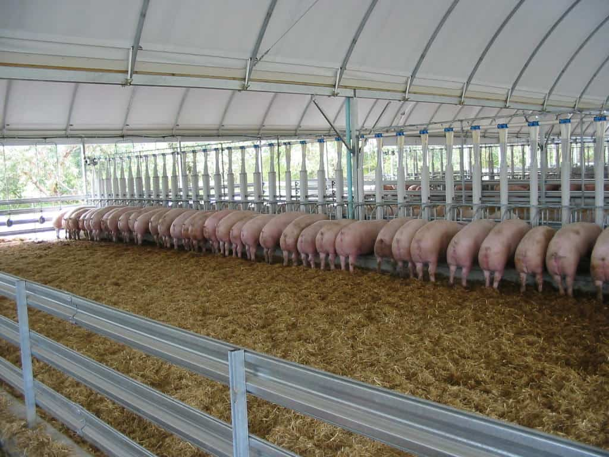

The choice of pig breed will depend on your goals, whether it’s for breeding, meat production, or specialty products like bacon. In commercial pig farming, crossbreeding often produces the best results by combining the desirable traits of multiple breeds. Make sure to select a breed that fits your available resources, market demand, and climate conditions to ensure success in your piggery.
 